8 Geographically Weighted Regression
8.1 Introduction
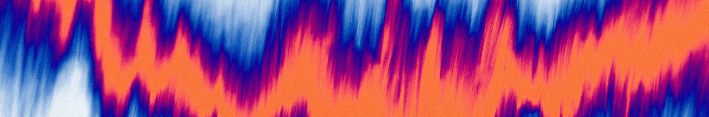
Aims
The aims of this practical are to:
- Understand the principles and rationale for Geographically Weighted Regression (GWR).
- Understand the importance of scale and the development of Multiscale Geographically Weighted Regression (MGWR).
- Implement and correctly interpret the outputs of GWR-MGWR when applied in a sociological context.
Application
To achieve this, we’ll use MSOA-level data to investigate spatially-varying relationships between life expectancy and key predictors in Greater Manchester, building upon the global models introduced in the previous practical.
Data
The data sources and attributes used in this analysis are described here.
Tools
Geographically Weighted Regression (GWR) (Spatial Statistics), Multiscale Geographically Weighted Regression (MGWR) (Spatial Statistics)
8.2 Practical
8.2.1 Why geographically weighted regression?
In Practical 7, we introduced spatial regression, and two common models: the spatial error model (SEM) and spatial lag model (SLM). Unlike aspatial regressions (e.g., ordinary least squares), which can perform poorly when applied to spatial data, spatial regressions incorporate space explicitly in the regression framework by incorporating spatial dependence, when the properties at one location are related to or influenced by those at neighbouring locations. By modelling the spatial dependence of the errors (SEM) or the spatial dependence of the dependent variable (SLM), these methods avoid biased coefficient estimates, can minimise model error, and can allow for more accurate predictions.
We can describe all of the above models, including OLS, SEM, and SLM, as global regressions, as they assume spatial stationarity, a situation in which statistical properties do not change over space. In practical terms, this means that the relationship between an independent variable and a dependent variable does not change across the study area. For example, let’s say we used OLS regression to investigate the relationship between deprivation and life expectancy for MSOAs in the North West of England. Here is a scatter plot of the relationship:
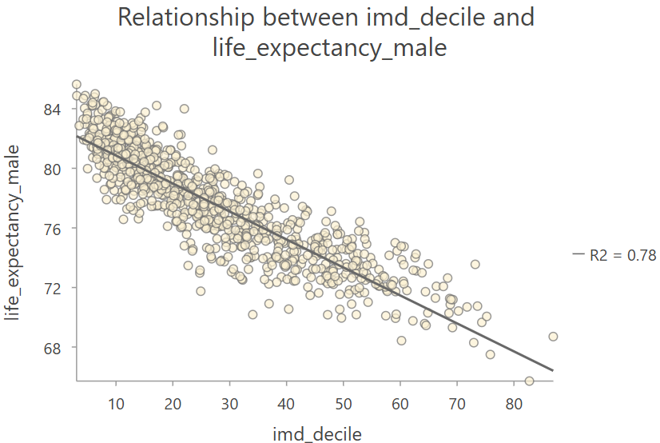
Here are the corresponding model coefficients:
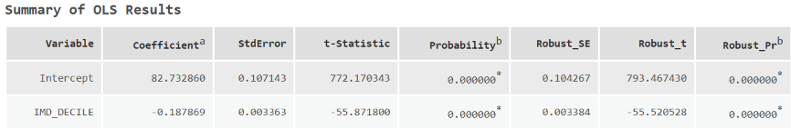
What proportion of the variation in life expectancy can be explained by deprivation?
For every one unit increase in deprivation, how much does life expectancy change?
Answers
The coefficient of determination \(\text{R}^2=0.78\). This is the proportion of the total variation in \(Y\) that is explained by the independent variables \(X\).
The coefficient for deprivation (imd_decile) \(\beta\approx-0.19\) i.e., as deprivation increases by one unit, life expectancy changes by \(\approx-0.19\) years. In this case, higher values represent greater levels of deprivation, and vice versa, and this is associated with a reduction in life expectancy.
In the example above, the relationship between deprivation and life expectancy is represented by a single global value i.e., \(\beta\approx-0.19\). This provides information on the strength and direction of the relationship, which in this case is negative i.e., as deprivation increases, life expectancy decreases, and statistically significant (\(p<0.05\)). This relationship is modelled as stationary across the study area i.e., the relationship between deprivation and life expectancy is the same in the county of Greater Manchester, as it is in Cheshire, Merseyside and Cumbria.
However, many geographic processes display spatial non-stationarity, a situation in which statistical properties change over space. Continuing with the example above, this could mean that the relationship between deprivation and life expectancy varies across the study area e.g., the relationship might be stronger in some regions, and weaker in others, or absent entirely in some regions. From our exploration of spatial autocorrelation, point patterns and even interpolation, we know that processes and phenomena vary spatially… if they didn’t, the field of Geography would be quite boring! The idea that relationships might change across space, is therefore perhaps not overly surprising.
Global regression methods cannot be used to model or capture non-stationarity, as they assume spatial (or temporal) stationarity, and produce a single coefficient for each independent variable, representing the relationship with the dependent variable.
By comparison, local regression methods produce spatially varying coefficients to capture spatial non-stationarity in the relationships between independent and dependent variables. For example, rather a single global coefficient representing the relationship between deprivation and life expectancy for the entire study area i.e., \(\beta\approx-0.19\), local regression methods would produce a local coefficient for each feature in the study area.
Examples of these local regression methods include geographically weighted regression (GWR), see Brunsdon et al. (1996b), and multiscale geographically weighted regression (MGWR), see Fotheringham et al. (2017b), which we will explore today.
8.2.2 Pre-processing
To begin:
Open ArcGIS, initialise a new project in the
practical-8directory, establish a connection todataand then load the north-west England MSOA geometries produced in Practical 7:
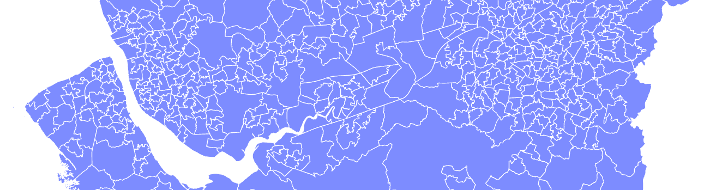
Ensure that the relevant joined fields are present e.g.,
life_expectancy_male,life_expectancy_female,total_annual_income,imd_decile, …
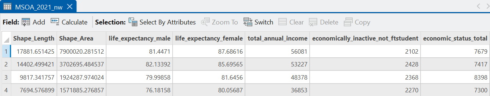
You will be pleased to learn that no further pre-processing is necessary! We can use the same spatial data from Practical 7 to develop global regressions (e.g., OLS, SEM, SLM) and local regressions (e.g., GWR, MGWR). Both of these approaches can be used to link life expectancy to MSOA-level predictors, but one assumes stationarity, while the other accounts for non-stationarity.
A key source for this week is Comber et al. (2023), which outlines a route map for successful applications of geographically weighted regression (GWR). While this approach should be considered for future analysis, it is worth noting that that we have deviated from Comber et al. (2023) across Practicals 7 and 8, but this is by design, building from global aspatial regression (OLS) through to global spatial regression (SEM, SLM), and in this week on to local spatial regression (GWR, MGWR).
8.2.3 Geographically weighted regression
In Practical 7, we demonstrated that there were statistically significant relationships between life expectancy and MSOA-level predictors, as identified by OLS. However, model residuals were highly spatially autocorrelated, as identified using Moran’s \(I\), indicating misspecification of the OLS model, violation of OLS assumptions, and/or that additional important spatial factors were missing from the model.
One way to address this is by using models which account for spatial dependence, which treat it as either a “nuisance” or as a reflection of “diffusion” between neighbouring units.
Spatially autocorrelated residuals could also arise due to spatial hetereogeneity, in which the process, relationship, or phenomenon we are modelling varies across space. If spatial non-stationarity is present98, then we might also see clustering of the residuals. This reflects the fact that a single global coefficient value would not be representative of the spatially varying relationship between \(X\) (e.g., deprivation) and \(Y\) (e.g., life expectancy), resulting in over-prediction of \(Y\) in some areas, and under-prediction in others.
This can be evaluated using geographically weighted regression (Brunsdon et al., 1996b). Conceptually, GWR is a modification of ordinary least squares, where the latter produces a model based on all of the observations in the dataset, as shown below:
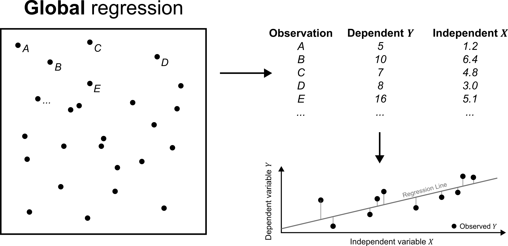
By comparison, GWR and other local regression methods pass a moving window across the study area, producing a local OLS model for each feature based on a subset of the observations, as shown below. This is repeated for all features in the study area.
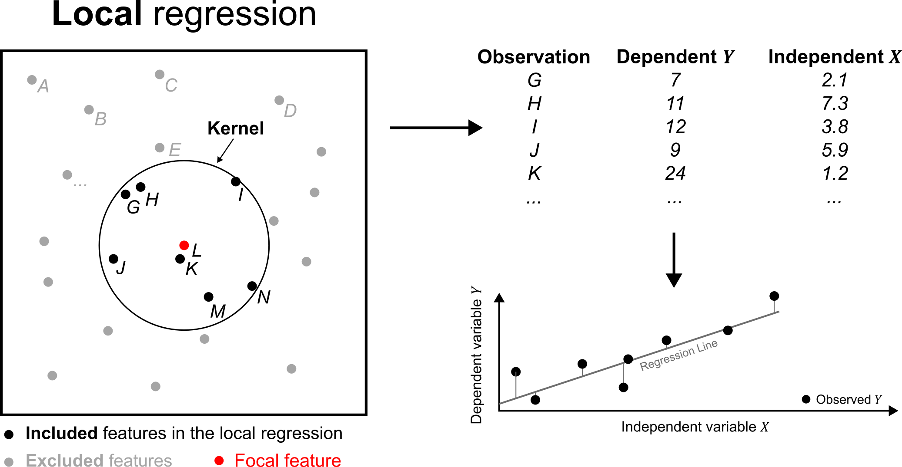
In the above example, a local OLS model is produced for the focal feature \(K\). Points outside of a window or kernel around \(K\) are excluded from the model, while those inside are included in the model. These data points can either contribute equally to the OLS model, or could be weighted based on the distance from the focal feature, hence the term geographically weighted regression. For example, we might want to weight \(L\) and \(K\) more heavily than \(I\) and \(N\), in accordance with Tobler’s Law (Tobler, 1970). We will explore different specifications of GWR models in more detail below, but to begin:
Open the Geographically Weighted Regression tool, using
MSOA_2021_nwas the “Input Features” andlife_expectancyas the “Dependent Variable”. For “Model Type”, we can specify whether our input data are continuous, binary or count data99. Life expectancy is a continuous variable so selectContinuous (Gaussian).
As discussed last week, it is typical to include a range of independent variables in a multivariate analysis, so we’ll start by using the following “Explanatory Variable(s)”:
total_annual_income,disabled_perc,imd_decile, andfuel_poverty_perc.
The key remaining choices to calibrate the GWR are whether to use a fixed kernel or an adaptive kernel, and how to select an appropriate bandwidth for each. In ArcGIS, these are referred to as the Neighbourhood Type (Distance band or Number of neighbours) and the Neighbourhood Selection Method respectively (Golden search or Manual intervals or User-defined). We can also select the shape of the kernel, which is specified via the Local Weighting Scheme under “Additional Options”.
Don’t worry! I have not yet explained what these calibration options do, and we’ll explore each option in more detail below, including their effects on the output. For now, we’ll use the following settings:
Use “Neighbourhood Type” =
Distance band, “Selection Method” =Golden searchand “Local Weighting Scheme” =Bisquare.
As a final step before running our first GWR model, we will standardise our dependent and independent variables to have a mean of zero and a standard deviation of one. This standardisation is useful when there are large differences in the magnitude of our variables. For example, total_annual_income ranges from £27,072 to £79,191, while the proportional variables (e.g., disabled_perc and fuel_poverty_perc) can only span 0% to 100%. Standardisation is useful for numerical stability, but can also aid interpretation, as we can more easily compare the coefficients for different independent variables.
For example, let’s say we produced a model predicting life expectancy based on income and deprivation, making sure to standardise the independent variables. If this produced the following coefficients: \(\beta_\text{income}=0.8\) and \(\beta_\text{deprivation}=0.3\), we can compare them directly i.e., “A one standard deviation increase in income is associated with a 0.8 standard deviation change in life expectancy, whereas a one standard deviation increase in deprivation is associated with a 0.3 standard deviation change in life expectancy”. These coefficients are directly comparable, being expressed in the same units, which allows us to conclude that income is more important than deprivation in this example. This standardisation does not change the nature of the relationship between \(Y\) and \(X\), only the ease of interpretation (and numerical stability).
Ensure “Scale Data” is Checked, save the output with a suitable name in
project-8.gdb, and run.
This should produce a range of outputs, including a feature layer showing the spatial distribution of residuals:
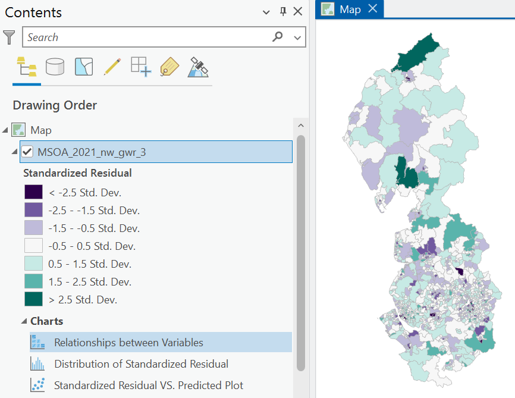
As always, we should always inspect warnings before jumping to interpretation, which in this case are as follows:
WARNING 000642: Problems reading 18 of 932 total records.
WARNING 000848: Features with bad records (only includes first 30): OBJECTID = 21, 27, 50, 78, 107, 145, 170, 174, 367, 419, 492, 755, 791, 911, 912, 914, 921, 923.This is the same warning from last week, flagging rows where we have missing data, so we can ignore this for now.
To begin, inspect the Model Diagnostics output.
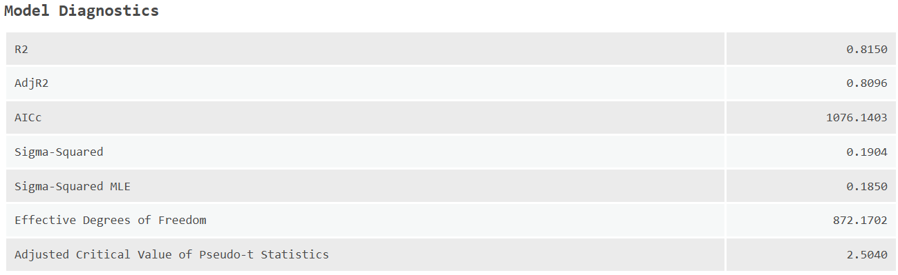
What is your appraisal of the overall model performance?
Interpretation
Here \(\text{R}^2\approx0.82\), indicating 82% of the variability in life expectancy can be explained using the MSOA-level predictors. Note that while a GWR constructs a series of local regressions, one for each feature, and each with their own local \(\text{R}^2\) value (this is available as the Local R-Squared field in the GWR Attribute Table), a global \(\text{R}^2\) can be calculated using the observed and predicted life expectancy values for each feature.
Inspect the
Relationship between Variablesplot, which shows the pairwise relationships for all variables in the model.
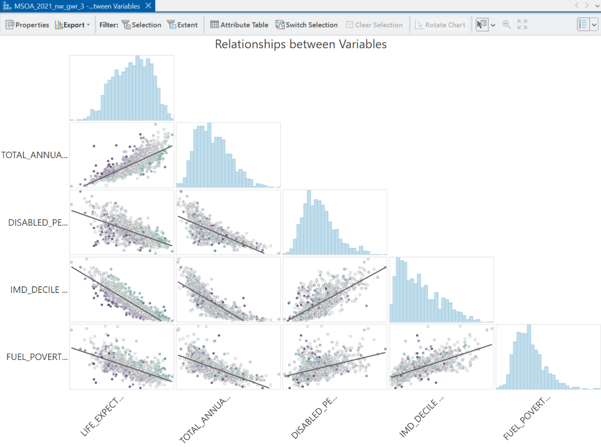
Which global relationships are positive or negative?
Interpretation
These plots are linear OLS regressions. Life expectancy is negatively correlated with fuel poverty, deprivation and disability, and positively correlated with income, in accordance with the OLS and spatial regression results from Practical 7.
Perhaps unsurprisingly, there are also correlations between the independent variables, for example income is negatively correlated with disability. Pearson’s \(r\) and \(\text{R}^2\) can also be calculated and added to the plot via Properties → Matrix Layout to aid interpretation.
Using the histograms in the Relationship between Variables plot, how would you characterise the distributions of the model variables?
Interpretation
None of the variables are perfectly normally distributed, with varying degrees of skew. For example, both total_annual_income and fuel_poverty_perc are right skewed, indicating the presence of high value outliers i.e., MSOAs with particularly high levels of income or particularly high rates of fuel poverty.
Conversely, life expectancy is left skewed, indicating the presence of low value outliers i.e., MSOAs with particularly low life expectancy.
Inspect the
Distribution of Standardized Residualplot.
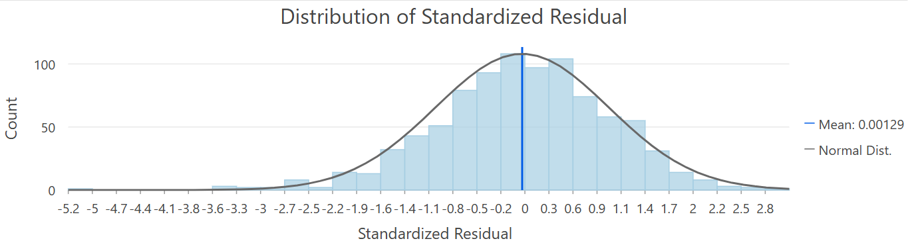
How would you describe the distribution of model errors?
Interpretation
The model residuals broadly conform to a normal distribution. There is however some evidence of left skew, with life expectancy at some MSOAs significantly underpredicted.
You can modify this plot to investigate other model attributes:
Update the plot to show the distribution of local \(\text{R}^2\).
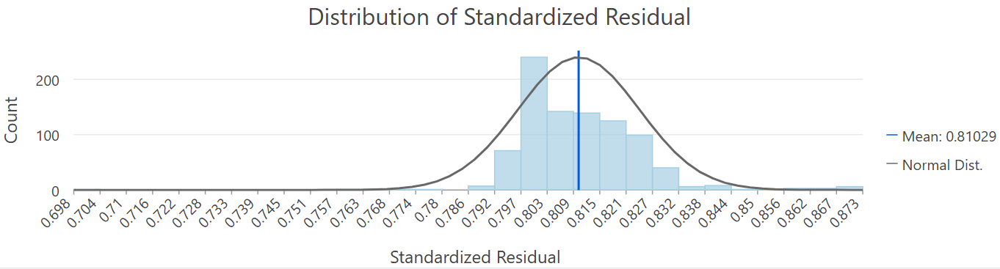
How does the model performance vary?
Interpretation
In the context of the overall calculated model \(\text{R}^2\approx0.82\), most local \(\text{R}^2\) values cluster around the global value. However, for some MSOAs, the current set of independent variables explains a higher proportion of the variability in life expectancy, up to \(\text{R}^2\approx0.87\), whereas for other MSOAs, a larger proportion of variability is left unexplained i.e., \(\text{R}^2\approx0.70\).
Inspect the
Standardized Residual vs. Predictedplot, which shows standardised predicted values on the x-axis, and the corresponding residuals on the y-axis.
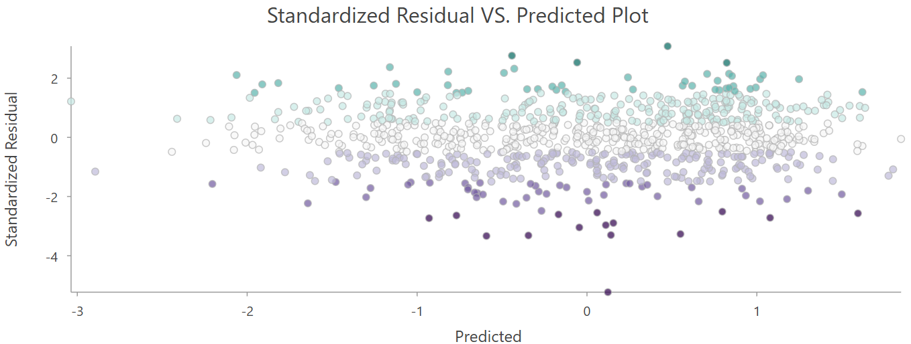
Is there evidence of systematic error?
Interpretation
In my view, there is no strong evidence of systematic error, given the presence of homoscedasticity of the residuals i.e., the magnitude of the error does not appear to be related to the magnitude of the predicted value.
Here are some examples of heteroscedastic errors:
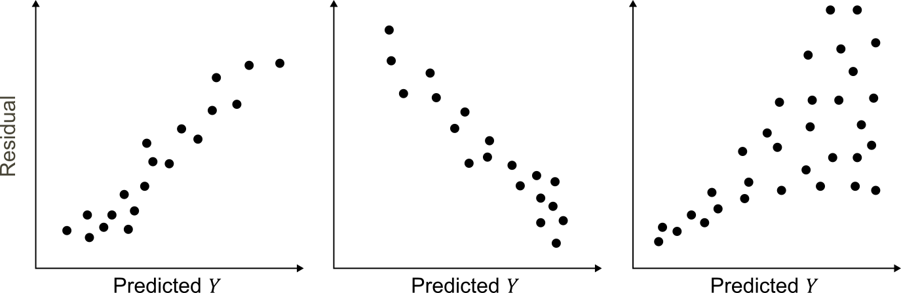
The current GWR feature layer shows the distribution of residuals, but you can update the symbology to investigate how the coefficients and model performance vary spatially, as shown below for local \(\text{R}^2\):
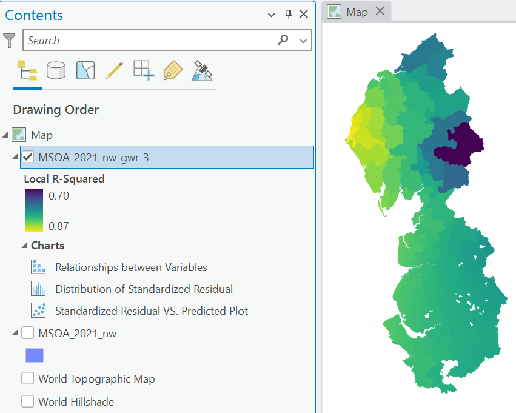
Update the layer symbology to visualise the coefficients for each of the modelled independent variables e.g.,
Coefficient (Scaled TOTAL_ANNUAL INCOME). Think carefully about your choice of symbology, as this will influence your interpretation. For example, if the local coefficients are both positive and negative, it would make sense to use a diverging colour scheme, centred on zero, as shown below. If the coefficients are either positive or negative, then a simpler sequential colour scheme would be suitable, with values and colours progressing from low to high.
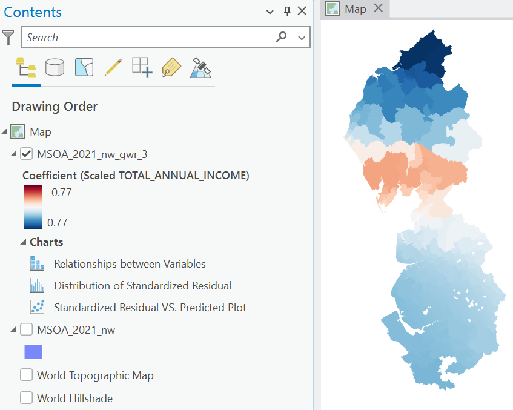
Are there any spatial patterns to the relationships between life expectancy and the modelled independent variables?
Interpretation
In a word, yes! For example, total annual income generally has a positive relationship with life expectancy, but this switches to negative for parts of Cumbria. By comparison, deprivation has a consistently negative relationship with life expectancy100, as shown below, but this is particularly strong in south Cumbria.
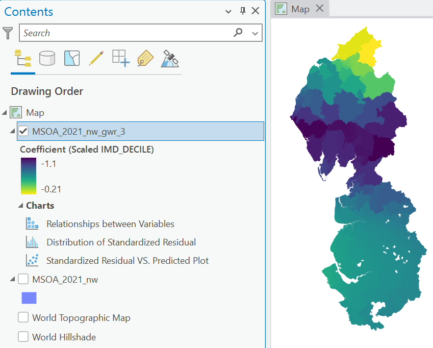
Based on your interpretation of the local coefficients, is there evidence of spatial non-stationarity?
Interpretation
Yes! If the underlying relationships between life expectancy and the MSOA-level predictors were stationary, then the local coefficients should be identical across the study area. This is clearly not the case, with differences in both the magnitude of the relationships (e.g., deprivation) and even their direction (i.e., income).
As we discussed in Practical 7, when performing a multivariate analysis we need to be aware of issues of multicollinearity i.e., when independent variables are highly correlated with each other (Kim, 2019). This is relatively straightforward to assess globally, for example via the Variance Inflation Factor (VIF), but this becomes more complicated for GWR. Rather than a single global model, GWR is producing a local regression for each feature in the dataset101, each of which could be characterised by multicollinearity.
One metric we can use to assess this is the Condition Number (\(\text{CN}\)), which is represented by the CND_Number field in the GWR Attribute Table. We won’t explore the mathematics today, but the aim of this metric is to measure the stability of the estimated coefficients. When variables are collinear (i.e., similar values for two independent variables), they contribute overlapping information and it is difficult for the model to determine which explains the change in the dependent variable. For example, imagine we developed a model including both total household income and total household disposable income i.e., household income minus taxes and debt payments. These variables are likely to be highly collinear, in that they provide very similar information. In this situation, the coefficients would be highly unstable, increasing or decreasing significantly with even small changes in the values of the variables.
This behaviour is measured by the Condition Number, with a general rule that \(\text{CN's}>30\) indicate coefficient instability, and therefore, local multicollinearity (Belsley et al., 1980).
Change the layer symbology to the Condition Number (
CND_Number).
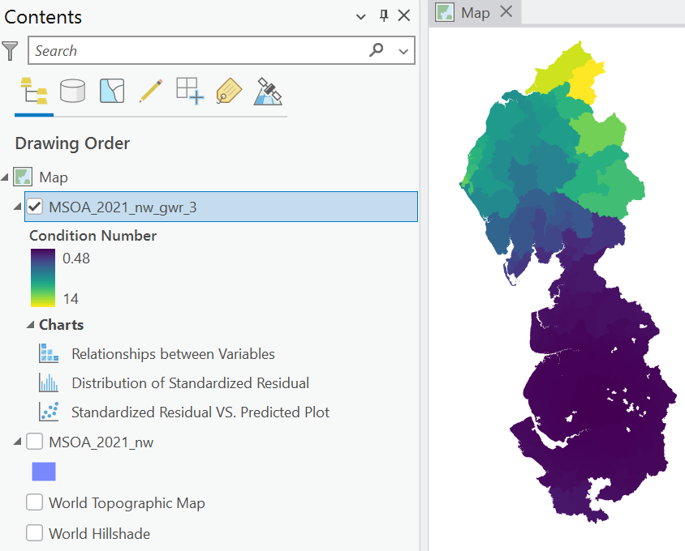
Is there evidence of local multicollinearity? Is there any spatial pattern to the Condition Numbers? Why might this be?
Answer
There is evidence of varying levels of multicollinearity across the study area. For the most part, \(\text{CN}\) values are very small, as shown in the histogram below, with mean \(\text{CN}\approx1.0\) and median \(\text{CN}\approx0.59\). \(\text{CN}\) values are somewhat larger in parts of northern Cumbria, although consistently below the rule of thumb of \(\text{CN}>30\).
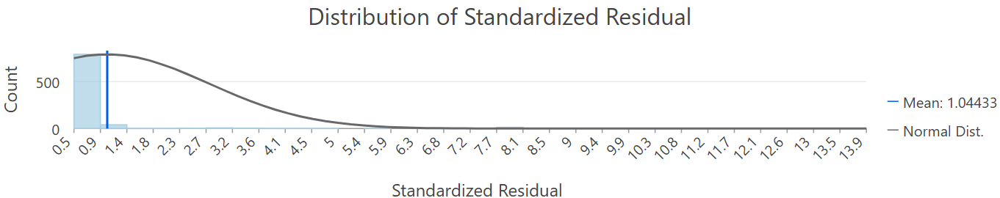
Before we move on to investigate the calibration of the GWR, including selecting the type and shape of the kernel (e.g., fixed vs. adaptive), it is worth reflecting on the overall model results. Unlike global regressions (e.g., OLS, SEM, SLM), which feature a small set of important model statistics, including a single coefficient for each independent variable, interpretation is much more complex for GWR. For our dataset, which consists of 932 feature, and our model, which features four independent variables, there are 3,728 coefficients, plus corresponding p-values and other statistics! While this requires effort to interpret and summarise, this also permits a much deeper understanding of the nature of the spatial phenomenon, including non-stationarity.
8.2.4 Calibration: Fixed kernel
In our first model, we used a fixed kernel, where the neighbours of each feature were defined based on a fixed distance (or bandwidth), as shown below:
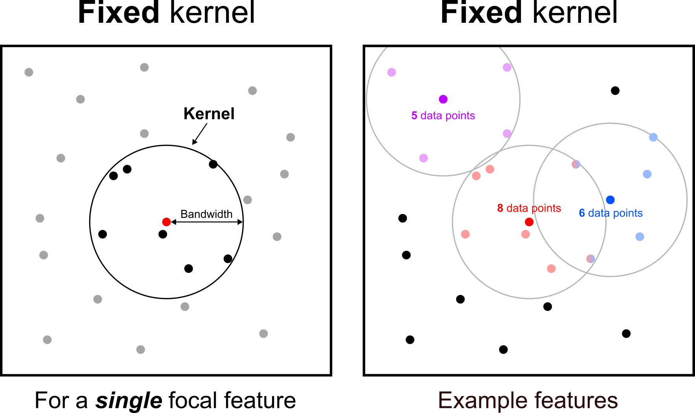
In other words, the same bandwidth is used for all feature, typically resulting in a different number of neighbours for each, and in turn, a different number of observations for each local regression.
How do we select the optimal bandwidth?
We can specify the bandwidth manually, using the “Neighbourhood Selection Method” and either the User-defined or Manual intervals options, if we had a strong theoretical or process-based argument for a particular bandwidth. For example, in Practical 5: Point Patterns, we investigated the spatial distribution of Panthera tigris in the Indian subcontinent, noting typical home ranges of 56.4 km2 (female) and 110 km2 (male) for tigers in the Sundarban of India and Bangladesh (Naha et al., 2016) and 73.6 km2 (female) and 132.7 km2 (male) in the Panna Tiger Reserve, central India (Sarkar et al., 2016). If we wanted to build a regression model explaining the spatial distribution of tigers, we might therefore be interested in spatial attributes within that home range (e.g., climate, topography, availability of prey) or those immediately adjacent to it (e.g., human influence or infrastructure which might act as a barrier to species expansion). By comparison, spatial attributes many hundreds of kilometers away are unlikely to have a significant impact. Based on this reasoning, we might use a fixed kernel, where the bandwidth approximates the home range of each tiger.
In the absence of a theoretical reason for a particular bandwidth, we can use statistical approaches to select the optimal bandwidth, which in ArcGIS is possible via the Golden Search method.
Inspect the Golden Search Results table, which includes the tested bandwidths102, and a test statistic known as the corrected Akaike information criterion (AICc).
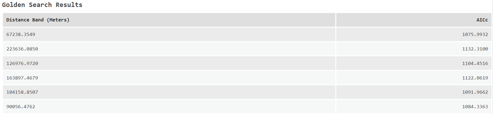
Like \(\text{R}^2\), the Akaike information criterion (Akaike, 1998) is a measure of the goodness of fit of a model. We will introduce the AIC more fully in Practical 10: Spatial Interaction Modelling, as this requires understanding of a maximum likelihood approach, which we will also cover in that practical. For now, all we need to know is that lower AICc scores are better, balancing the performance of the model and the number of predictors, in accordance with the principle of model parsimony.
As per the documentation, this method first evaluates model performance for maximum and minimum bandwidths and then calculates the AICc at various bandwidths incrementally between them. The maximum bandwidth (\(\approx224 \: \text{km}\)) is the bandwidth at which every feature has half the number of input features as neighbours (\(932 \cdot0.5=466 \: \text{neighbours}\)), and the minimum bandwidth (\(\approx67 \: \text{km}\)) is the bandwidth at which every feature has at least 5 percent of the features in the dataset as neighbours (\(932 \cdot0.05\approx47 \: \text{neighbours}\)). In short, the Golden Search method develops GWRs for many different bandwidths and returns the best, based on AICc.
For our model, the Golden Search method has finalised with a bandwidth of \(67724.0669 \: \text{m}\) (AICc = \(1076.1403\)), although we should be aware of the following:
WARNING 110306: The final model didnt have the lowest AICc encountered in the Golden Search Results.The Golden Search method is not guaranteed to find the lowest possible AICc, which we can see by investigating the summary table, where there is bandwidth with a slightly lower AICc of 1075.9932. In this situation, we could re-run GWR specifying the bandwidth manually (“Neighbourhood Selection Method” = User Defined). However, given the very small difference in AICc and the selected bandwidth (\(67.7 \: \text{km}\) vs. \(67.2 \: \text{km}\)), this is likely to have only a small impact on the results.
It is also worth inspecting the number of neighbours for each feature, as stored in the Attribute Table (Number of Neighbors).
How many neighbours are there for each MSOA? How does this vary spatially?
Use the Neighbourhood Explorer, as introduced in Practical 2, to investigate the neighbourhoods for each feature, using
Fixed Distanceas the method, and using theDistance Bandselected by GWR.
Change the layer symbology to visualise the number of neigbours, using Graduated or Unclassed colours.
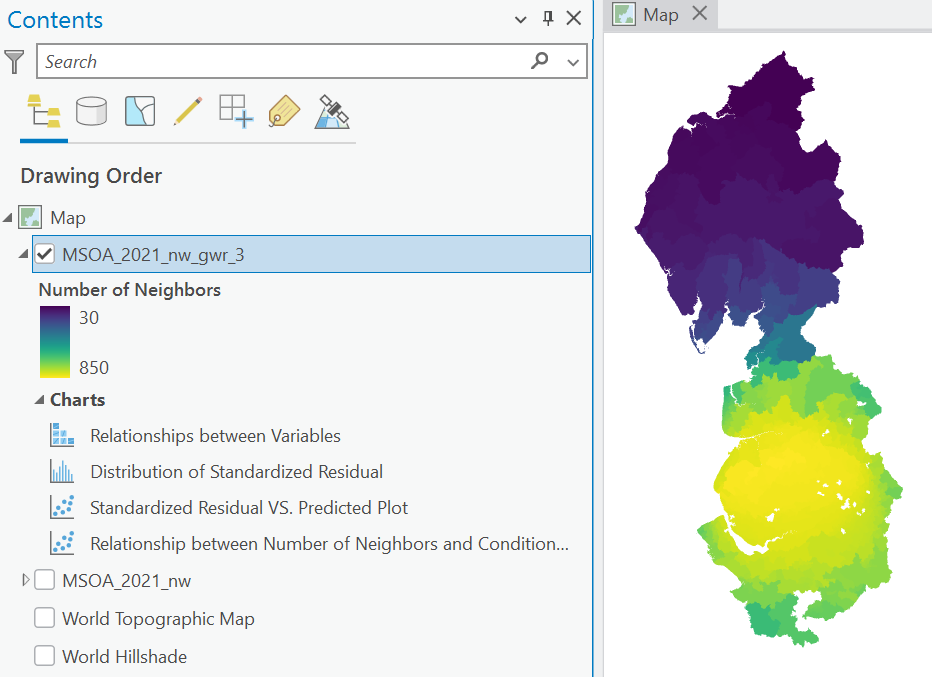
Do you think a fixed kernel is a good choice for our MSOA dataset? How does this correlate with local model stability (CND_Number)?
Interpretation
As discussed above, there is evidence of varying levels of multicollinearity across the study area, with higher \(\text{CN}\) values in parts of northern Cumbria, although consistently below the rule of thumb of \(\text{CN}>30\).
This pattern likely reflects the spatial structure of the data, particularly the size and distribution of the MSOAs, and the use of a fixed bandwidth. In most of the North West, and particularly in the major cities of Manchester and Liverpool, MSOAs are relatively small, reflecting population density, which means that local regressions are likely to be constructed based on a large number of neighbouring features. By comparison, the relatively sparse population in rural areas, including in Cumbria, means that MSOAs are relatively large, so local regressions are likely to be constructed based on a small number of neighbouring feature. In general, smaller datasets are more sensitive to statistical issues, including multicollinearity, as individual data points carry a greater weight i.e., changing a single data point in a dataset of 10,000 observations is unlikely to have a significant impact, but what if the dataset was of only 10 observations?
The spatial variability in the Condition Number arises due to the use of a fixed bandwidth, which is applied uniformly across the study area. The optimised bandwidth of \(67.7 \: \text{km}\) is a good fit overall, ensuring that most MSOAs have many neighbouring feature (as shown below) and therefore stable model coefficients. However, the fixed bandwidth is less appropriate in the sparsely populated rural areas, resulting in few neighbouring feature, small regression datasets, and less stable model coefficients.
Based on this interpretation, we may want to consider an adaptive kernel.
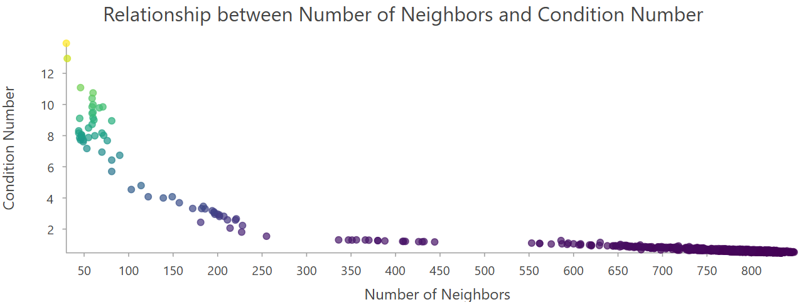
8.2.5 Calibration: Adaptive kernel
Rather than utilising a fixed kernel across the study area (i.e., distance-based), an alternative approach is to use an adaptive kernel, where the bandwidth varies to ensure an equal number of neighbours per feature.
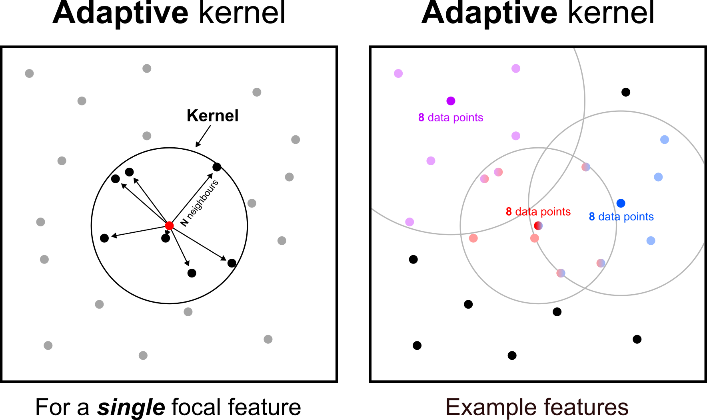
Re-run Geographically Weighted Regression, using the same dependent and independent variables and other settings outlined above, but this time update “Neighbourhood Type” to
Number of neighbors, again optimising viaGolden Search.
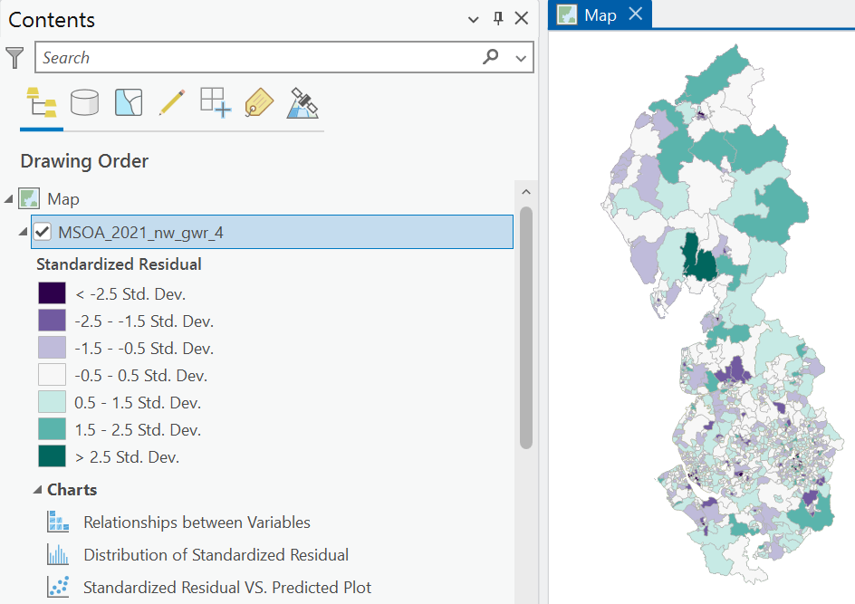
What is the overall model performance?
Interpretation
The model \(\text{R}^2\approx0.84\) which indicates that approximately 84% of variation in life expectancy can be explained by the MSOA-level predictors, when using an adaptive kernel. This is slightly higher than the model using a fixed kernel, where \(\text{R}^2\approx0.82\). Similarly, the AICc is also slightly lower.
How many neighbours are being used for each local regression? How does this differ from the fixed kernel used previously?
Interpretation
The number of neighbours is kept constant for all feature, and in this case the selected number of neighours is \(153\), optimised using Golden Search and recorded in the Number of Neighbors field. This is achieved by modifying the bandwidth for each feature.
How would you describe the numerical and spatial distribution of the model residuals?
Interpretation
The numerical distribution of model residuals is shown below. These are approximately normally distributed.
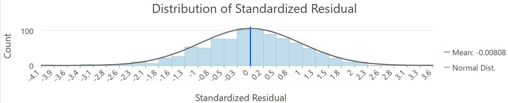
We could also assess the spatial distribution of the residuals using Moran’s \(I\). It is tempting to use a \(K\) nearest neighbours approach here, setting \(K=153\) to match the optimised bandwidth selected above. However, this isn’t necessary, because fundamentally we are measuring two different things. For GWR, the bandwidth is the scale at which we are modelling the process. Having done so, we are interested in the spatial dependence of the errors, and whether this is present once spatial heterogeneity has been accounted for.
As discussed in Week 3, the result will be sensitive to the designation of the spatial weights matrix. For example, when using Queen’s contiguity (Contiguity edges corners), \(I\approx-0.008\) with \(p\approx0.73\), indicating that statistically significant positive or negative spatial autocorrelation is absent.
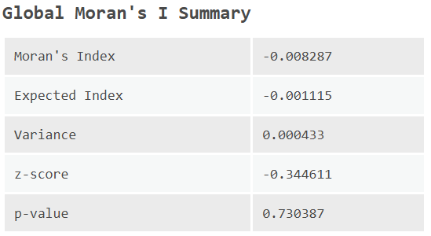
What is your assessment of local multicollinearity? Is the pattern different to when a fixed kernel was used?
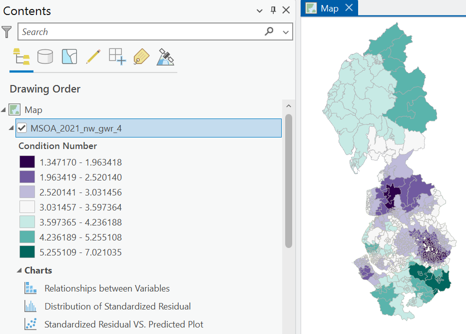
Interpretation
Yes! There is very strong and statistically significant positive spatial autocorrelation of the Condition Numbers (\(I\approx0.95\), \(p<0.05\)), using Queen’s contiguity. While all MSOAs exhibit \(\text{CN}<30\), \(\text{CN}\) clusters (HH, LL), as identified using local Moran’s \(I_i\) (see below), are found in Manchester and Liverpool and parts of Cheshire, Lancashire and Cumbria.
Importantly, while the Condition Numbers for the fixed kernel primarily reflected the spatial structure of the data (i.e., number of neighbours), here their distribution is much more interesting, providing insight into the spatial stability of the model coefficients, and the degree of local multicollinearity.
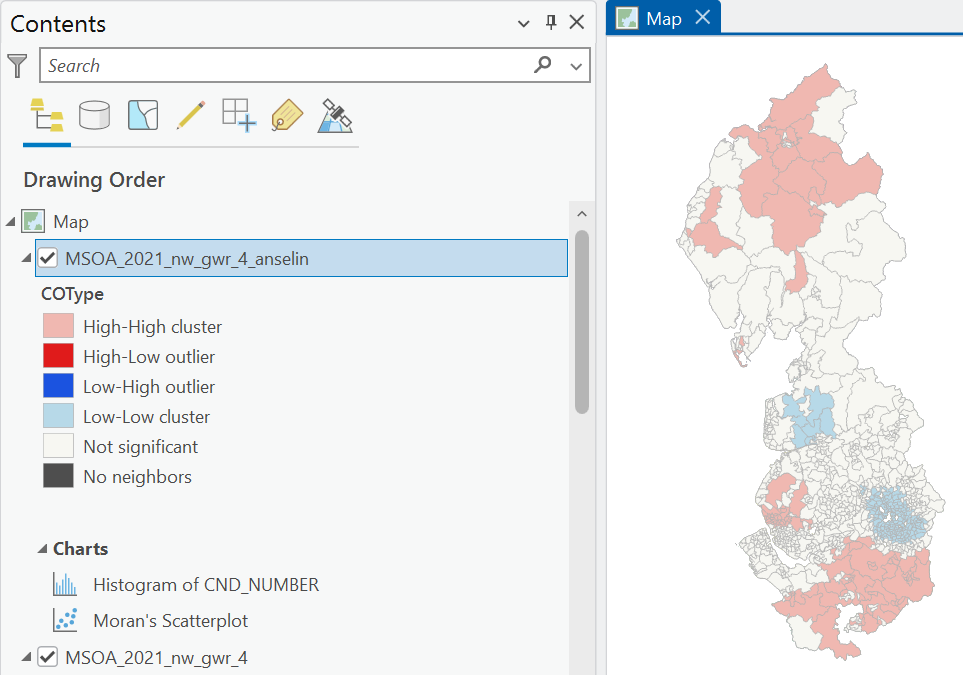
You may be asking the following important question:
Should I use a fixed or adaptive kernel?
As a general rule:
- When the data are relatively evenly distributed (e.g., a regular grid), use a fixed kernel.
- When the data show clustering or uneven density, use an adaptive kernel.
For our data, while MSOAs have similar populations, they represent very different spatial areas (e.g., central Manchester vs. Cumbria). When a fixed kernel is used, this results in vastly different neighbourhood settings (\(\text{n} = 30 - 848\)).
8.2.6 Calibration: Local weighting scheme
In addition to selecting the kernel (fixed vs. adaptive), we can also select the local weighting scheme, which determines how features and their attributes are weighted in the local regressions. While we could use a binary approach i.e., features within the kernel are weighted uniformly, and those outside the kernel are excluded from the local regression, it is more typical to use a weighting scheme, in accordance with Tobler’s Law (Tobler, 1970), where features closer to the focal feature are weighted more heavily than those further away. The local weighting scheme determines how quickly weights decrease as distances increase. There are lots of formulas that could be used here e.g., uniform, exponential, tri-cube, with useful information in Gollini et al. (2015). ArcGIS provides two widely used options: Gaussian and Bisquare.
Gaussian weighting is defined as follows:
\[ f(d)=\exp\left(-\frac{1}{2}\left(\frac{d}{h}\right)^2\right) \]
where \(d\) is the distance between features and \(h\) is a bandwidth value, which can be modified to change how quickly weights decrease with distance. The plot below shows how weights change with different values for \(h\):
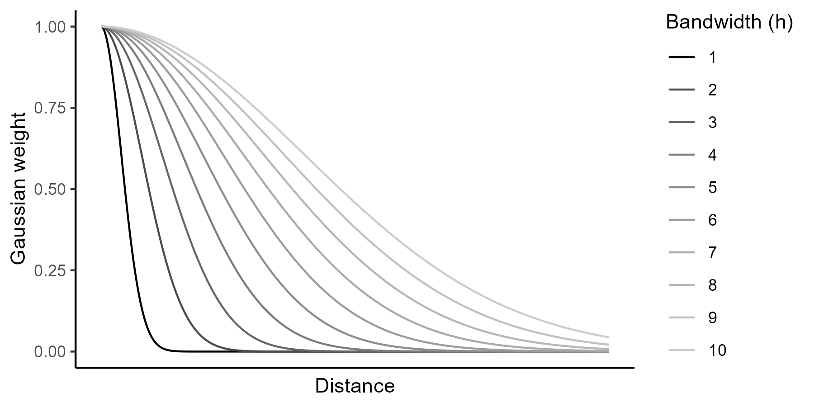
This approach assigns a weight of 1 to the focal feature while weights for the neighbouring features gradually decrease as the distance from the focal feature increases. While it may look like it in the plot above, a Gaussian weighting scheme never reaches zero, but weights for features far away from the focal feature can be quite small and have almost no impact on the regression.
By comparison, bisquare weighting assigns zero to all features outside of the neighborhood specified. As a result, these do not impact the local regression for the focal feature, as per the following equation, and visualised below:
\[ f(d)=\begin{cases}\left(1-\left(\frac{d}{h}\right)^2\right)^2 & \text{if } d<h\\ 0 & \text{otherwise.}\end{cases} \]
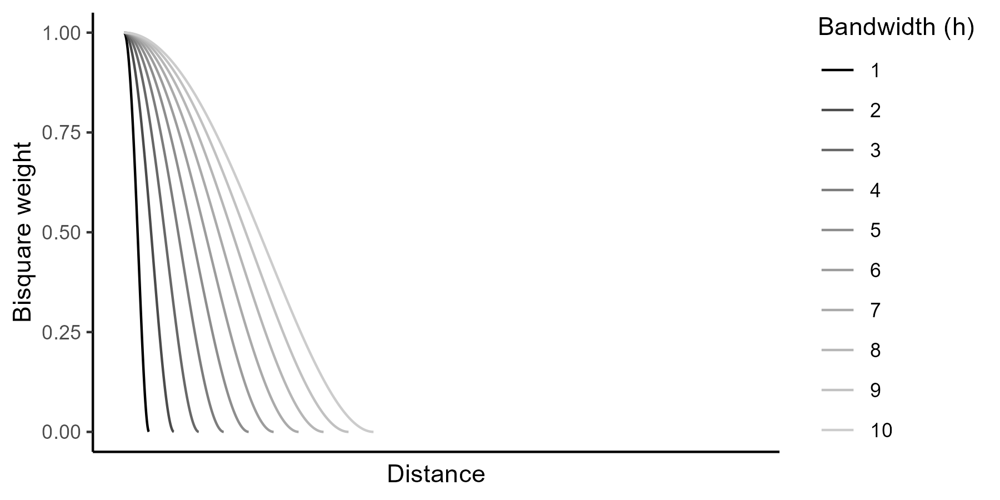
We’ve been using the bisquare approach so far, so:
Re-run Geographically Weighted Regression, using the same settings as before (i.e., dependent and independent variables, scaling data, adaptive kernel,
Golden Searchmethod), but now set the “Local Weighting Scheme” toGaussian, which can be found underAdditional Options.
Has model performance changed significantly?
Interpretation
Not particularly! While there are slight changes in the model \(\text{R}^2\), AICc, and local regression coefficients, this would not have a significant impact on our interpretation of the relationships between life expectancy and MSOA-level predictors.
How has the number of neighbours changed?
Interpretation
When using an adaptive kernel and bisquare bandwidth, Number of Neighbors = \(153\). When a Gaussian bandwidth is used, Number of Neighbors = \(35\). In my view the latter is somewhat misleading, because technically all the features in the dataset contribute to the regression for the focal feature103. However, the nearest \(35\) observations (in this case) define the bandwidth \(h\), which is used to assign the weights for all observations. For bisqaure weighting, the Number of Neighbors can be interpreted more easily: for each focal feature, the 153 nearest neighbours contribute to the local regression, weighted accordingly between 0 and 1104, while all other features are assigned a weight of 0.
As distant features make no contribute to the local regression using bisquare weighting, a larger number of neighbours may be required to obtain coefficient stability (assessed via AICc). By comparison, for a Gaussian weighting scheme, the bandwidth controls how quickly weights decay, not which observations are included or excluded. For our investigation, where we expect the influence of neighboring features to diminish gradually with distance, a Gaussian approach is preferred, although the difference between the approaches is rather small.
8.2.7 Multiscale geographically weighted regression
So far, so good. We’ve developed geographically weighted regressions, taking into account non-stationarity in the relationships between life expectancy and MSOA-level predictors.
However, while this is a powerful exploratory technique, one weakness of standard GWR is that it utilises a fixed neighbourhood for all the predictors. In our testing above, this was a bandwidth of \(\approx67\;\text{km}\) (fixed kernel) or \(153\) neighbours (adaptive kernel). In reality, the processes being modelled might operate at different spatial scales, with the relationships characterised by different degrees of spatial non-stationarity. For example, the spatial heterogeneity in the relationship between life expectancy and income may differ from that between life expectancy and deprivation. This can be addressed using multiscale geographically weighted regression (MGWR), which facilitates the use of predictor-specific bandwidths (Chang Chien et al., 2020), as illustrated below:
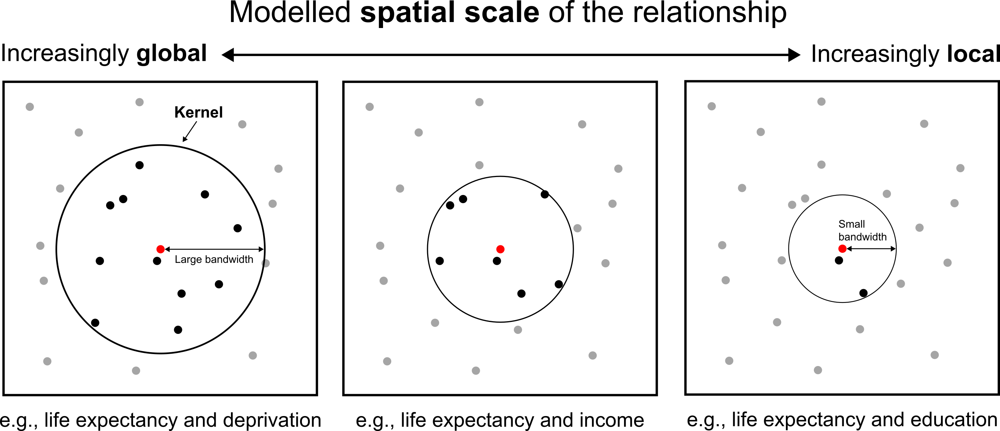
Open the Multiscale Geographically Weighted Regression tool, and select the same inputs as above:
- “Input Features” =
MSOA_2021_nw- “Dependent Variable” =
life_expectancy_maleorlife_expectancy_female- “Explanatory (Independent) Variables” =
total_annual_income,disabled_perc,imd_decile, andfuel_poverty_perc- Ensure “Scale Data” is Checked
- “Neighbourhood Type” =
Number of neighbours(adaptive kernel)- “Neighbourhood Selection Method” =
Golden Search- “Local weighting scheme” =
Gaussian
Save the “Output Features” with a suitable name in
project-8.gdb, and run.
There are lots of outputs to interpet here, so let’s focus on some key tables to start:
Under Messages, inspect the “Summary Statistics for Coefficients Estimates” table.
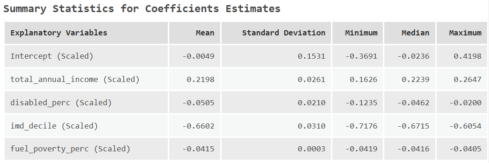
What do the scaled coefficients for each independent variable tell us?
Interpretation
This table includes important summary statistics for each independent variable, including their average relationship with life expectancy (mean, median), and the distribution of the coefficients (minimum, maximum, standard deviation). As a reminder, the fact that there is variability in the local model coefficients is clear evidence of spatial non-stationarity.
In addition, the MGWR has been modelled based on scaled variables, which as we discussed earlier, is useful for interpretation.
For this MGWR:
- a one standard deviation increase in total annual income is associated with a \(0.2198\) standard deviation change in life expectancy (\(+\)).
- a one standard deviation increase in disabled percentage is associated with a \(-0.0505\) standard deviation change in life expectancy (\(-\)).
- a one standard deviation increase in deprivation is associated with a \(-0.6602\) standard deviation change in life expectancy (\(-\)).
- a one standard deviation increase in fuel poverty percentage is associated with a \(-0.0415\) standard deviation change in life expectancy (\(-\)).
Our interpretation might be that deprivation (\(-0.6602\)) and income (\(0.2198\)) are the most important MSOA-level variables. By comparison, the disability and fuel poverty variables are likely being captured by the index of multiple deprivation.
Using the “Model Diagnostics” table, what is the overall MGWR model performance?
Interpretation
The MGWR \(\text{R}^2\approx 0.83\) with an AICc of \(\approx 1057\). Note that the MGWR tool also returns the results for a standard GWR, but the results will differ from those of the standalone GWR tool. Here the GWR output is used as a baseline model, when is then optimised by modifying the bandwidth for each predictor. In the GWR tool, a single bandwidth is used for all predictors, which is then optimised via AICc.
Inspect the “Summary of Explanatory Variables and Neighborhoods” table, which includes the number of neighbours for each independent variable (optimised via AICc), and the number of features which are classed as statistically significant.
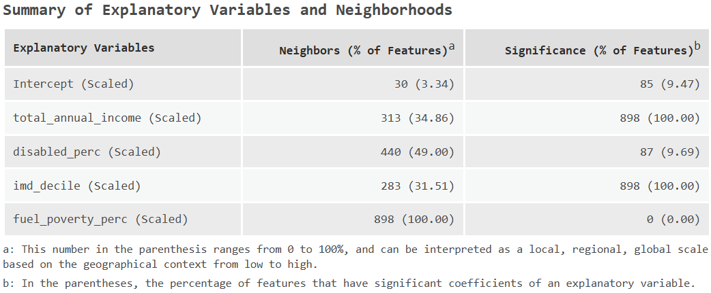
Is there evidence of multiscale relationships?
Interpretation
Yes. The differing number of neighbours selected for each independent variable provides evidence of multiscale relationships between life expectancy and the MSOA-level predictors. For example, the relationship between life expectancy and deprivation is best explained at a relatively local spatial scale, indicating that the strength of the association varies across relatively small areas. In contrast, the relationship between life expectancy and fuel poverty could be described as global, as the optimal bandwidth encompasses all of the MSOAs. This is indicative of stationarity i.e., the relationship between life expectancy and fuel poverty is of a similar magnitude across the study area.
Which independent variables are making the most important contribution to the spatial variability in life expectancy? Could we be justified in removing some variables?
Interpretation
Building from the summary coefficients discussed above, the “Summary of Explanatory Variables and Neighborhoods” table indicates that total annual income and deprivation are consistently important, with statistically significant associations with life expectancy for all MSOAs. By comparison, disability is only important for a small number of MSOAs (\(\approx10\%\)), while fuel poverty is not classed as statistically significant for any MSOA (\(0\%\)). To reiterate the arguments made above, we should not jump to the conclusion that fuel poverty is therefore unimportant, but perhaps that the effects of fuel poverty are being captured by another variable.
Let us now investigate the visual outputs, which includes feature layers for each independent variable (total_annual_income, disabled_perc, imd_decile, fuel_poverty_perc), including the coefficient values, representing the strength of the relationship with life expectancy, and the assessment of statistical significance, where hatched fills denote features that are not statistically significant. Note that because we are using scaled coefficients, a consistent symbology scale is used as default for all independent variables to facilitate comparison. While this is useful, it does mask coefficient variability within the study area, so I would recommend updating this to Graduated or Unclassed colours, using a variable-specific minimum and maximum. For example, below is the MGWR coefficient variability for total_annual_income:
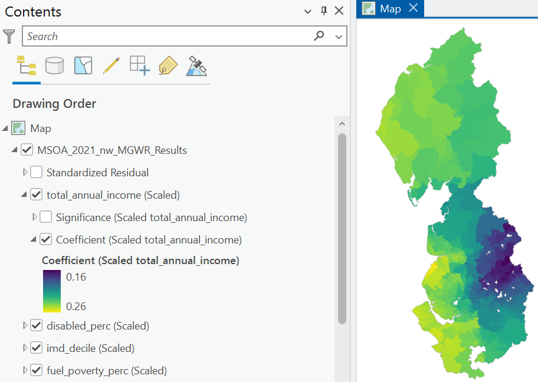
As a comparison, here is the MGWR coefficient variability for disabled_perc:
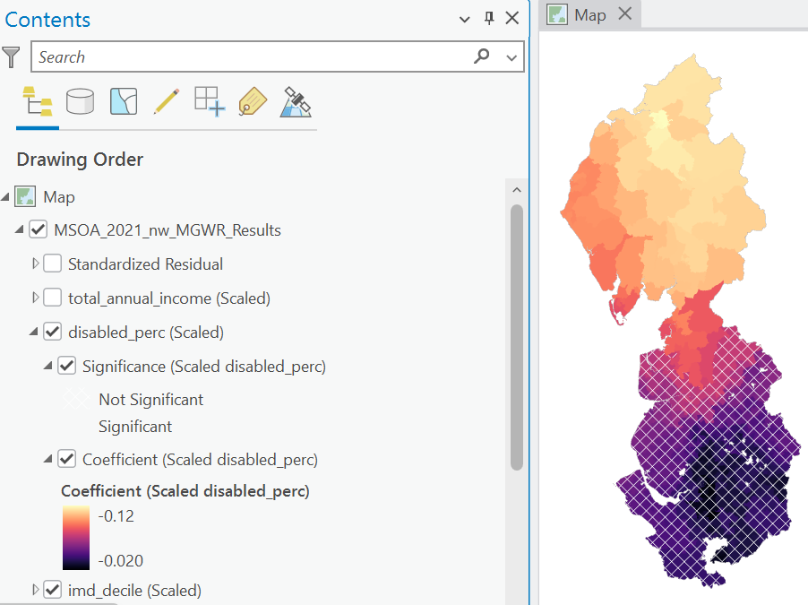
What is your interpretation of the statistical significance of the relationship between life expectancy and disability?
Interpretation
This plot indicates that disability has a statistically significant association with life expectancy in Cumbria and parts of Lancashire, but not the remainder of the North West. The simplest and perhaps most interesting explanation is that the true underlying relationship differs spatially i.e., disability has an important effect on life expectancy in some areas but not in others. It could also reflect the multivariate nature of the analysis, and potential interactions with the other predictors. For example, a similar level of deprivation in two regions might be reflected in different impacts on life expectancy, simply as a function of the other predictors for those regions (e.g., income, deprivation, fuel poverty). It is important to remember that coefficients should not be interpreted in isolation, in that they represent the change in the dependent variable for a one unit change in the independent variable when all other independent variables are held constant.
Is there spatial autocorrelation of the residuals (S_RESIDUAL field in the Standardized Residual Attribute Table)?
Interpretation
Spatial autocorrelation, as estimated using Moran’s \(I\) and Queen’s contiguity, is not statistically significant \(I\approx-0.008\), \(p\approx0.73\). This suggests that MGWR has captured much of the spatial heterogeneity in the relationships between life expectancy and the MSOA-level predictors.
Overall, the MGWR results provide fascinating (in my view) insights into the spatially varying processes that govern life expectancy, as summarised below. Deprivation and income are consistently statistically significant predictors, but their relationship with life expectancy varies spatially within the study area. Evidence of spatially varying relationships could have implications for healthcare management and policy i.e., a single, uniform policy may not be equally effective in all locations. In some areas, tackling deprivation could conceivably have the greatest impact on improving health outcomes, whereas in other areas, focusing on wealth inequality might be more effective105.
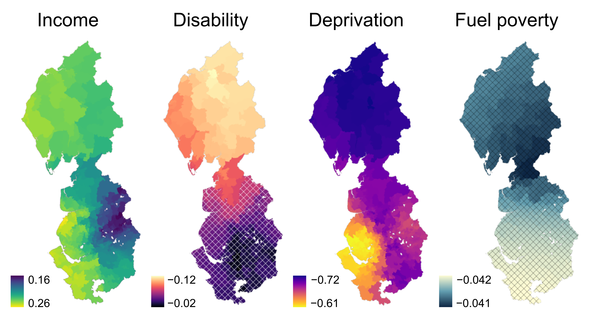
By comparison, while fuel poverty and disability percentage do influence life expectancy, the strength of the association is typically smaller (i.e., mean coefficients of \(\approx-0.04\) and \(\approx-0.05\), respectively) and not always statistically significant (\(0\%\) to \(\approx10\%\)). Instead, the effects of disability and fuel poverty on life expectancy are likely being captured by the Index of Multiple Deprivation, which already incorporates indicators representing income, employment, education, health, crime, housing, and the living environment. With model parsimony in mind, and to minimise the risk of multicollinearity, we could be justified in removing these variables from the model.
Re-run Multiscale Geographically Weighted Regression, but removing
disabled_percandfuel_poverty_perc.
Has model performance changed significantly?
Interpretation
No! The parsimonious MGWR \(\text{R}^2\approx0.83\), which is near identical to the model including disabled_perc and fuel_poverty_perc. In general, if you have two (or more) competing models with similar performance, you should select the model with the fewest number of parameters.
8.2.8 Model selection
Over the past two weeks, we have produced a range of models linking life expectancy to MSOA-level variables i.e., OLS, SEM, SLM, GWR, MGWR. You may be asking yourself the following question:
Which model should I choose?
Following Comber et al. (2023), a good approach is to begin your analysis with a standard linear regression, which can be used to evaluate whether the global relationships are statistically significant and whether there is any evidence of spatially autocorrelated errors. If relationships are significant and spatially autocorrelated errors are absent, then no further analysis is required - you have discovered powerful and stationary relationships for your phenomenon and study area!
If spatial non-stationarity is present (spatially autocorrelated errors), then a suitably-calibrated MGWR would be a sensible next step. The outputs can then be interrogated to inform subsequent analysis:
- if bandwidths are different (as evidenced above), use MGWR.
- if bandwidths are all the same (rare), then use GWR.
- if bandwidths tend to be global and the residuals are spatially autocorrelated, then a global spatial regression approach would be suitable e.g., SEM, SLM.
Finally, it should be recognised that other GWR variants are available e.g., MX-GWR, as discussed in Comber et al. (2023), and there are an array of secondary model decisions to be considered, some of which we’ve dealt with above (e.g., collinearity), and others which you can explore further in your own reading (e.g., handling outliers). Moreover, while the route map of Comber et al. (2023) is an excellent guide, it is not prescriptive, and there is flexibility to pursue your own workflow, guided by data and theory.
…and with that, congratulations! You have completed the practical and should now have a deeper understanding of the importance of non-stationarity and how we can account for it via geographically weighted regression.
8.3 Extra
While we have developed models to capture the spatially varying relationships between life expectancy and MSOA-level predictors, we should recognise that the model performance and the identified relationships are specific to these data and the study area i.e., the North West of England.
As in Practical 7, we can explore how the local models change when applied to a different region i.e., London.
To begin:
Either load the dataset for London [
MSOA_2021_london] or follow the instructions here to produce the dataset (i.e., filter MSOAs, join fields).
Following the Comber et al. (2023) routemap, run Multiscale Geographically Weighted Regression, using
total_annual_incomeandimd_decileas the independent variables, and the same settings as above for consistency (i.e., scale data, adaptive kernel, Gaussian weighting scheme).
How does model performance compare to the models developed for the North West region?
Interpretation
Interestingly, income and deprivation explain a smaller proportion of the variability in life expectancy in London, with \(\text{R}^2\approx0.67\). What other predictors do you think we might need to include?
Are the relationships been income, deprivation and life expectancy similar to those observed in the North West?
Interpretation
Yes. Deprivation is still negatively associated with life expectancy, with a mean coefficient of \(\approx-0.63\), while income is positively correlated (\(\approx0.20\)), which lends support to the generalisability of our model.
There are some fascinating patterns… lots to explore!
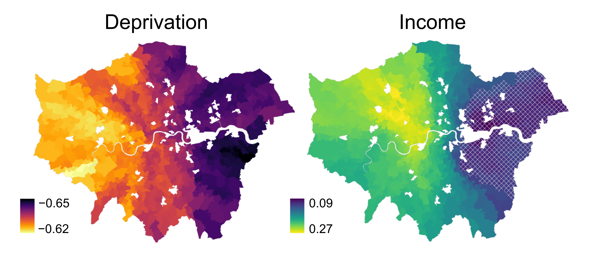
8.4 Resources
- Brunsdon, C., Fotheringham, A.S. and Charlton, M.E. (1996), Geographically Weighted Regression: A Method for Exploring Spatial Nonstationarity. Geographical Analysis, 28: 281-298.
- Fotheringham, A. S., Yang, W., & Kang, W. (2017). Multiscale Geographically Weighted Regression (MGWR). Annals of the American Association of Geographers, 107(6), 1247–1265.
- Comber, A., Brunsdon, C., Charlton, M., Dong, G., Harris, R., Lu, B., Lü, Y., Murakami, D., Nakaya, T., Wang, Y. and Harris, P. (2023). A route map for successful applications of geographically weighted regression. Geographical Analysis, 55(1), pp.155-178.